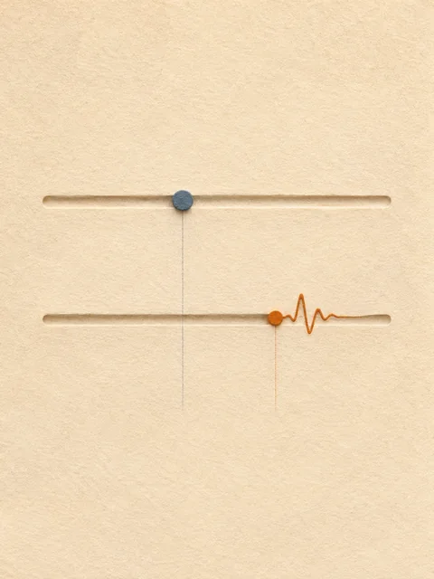
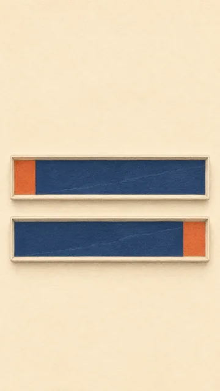

先记你会用哪两个时点定义一个差值。三个事件都有偏移时，再决定整体移音轨是否合适。
GAI · 5.4
整合声音画面
并形成发布说明
用同一版本的三个事件核对同步、字幕和来源
 VER. 2611
Built with impress.js
VER. 2611
Built with impress.js
GAI | M5 | 5.4 | 用同一事件定位声音与画面
圆点变大时，声音该在哪一刻出现？
校准片用三个圆点和三个短音提供可以重复找回的事件
2/26
SYNC
GAI | M5 | 5.4 | 用同一事件定位声音与画面
这节提交一份同版本检查表
完成偏移核算、一次修订方案和一段素材说明
- ■用同一版确定开头、中段和结尾的声画配对
- ■按统一差值写位置、方向和修订计划
- ■查原字幕的作用，说明程序画面和纯音的来源
3/26
SYNC
GAI | M5 | 5.4 | 用同一事件定位声音与画面
音画同步先指定对应事件
画面变化和声音开始必须是约定配对，才能测两者差值
| 界定 | 本节采用的做法 |
|---|---|
| 画面标记 | 第几个圆点开始放大 |
| 声音标记 | 对应的纯音开始 |
| 时间坐标 | 都以同一份版本开头为零点 |
4/26
SYNC
GAI | M5 | 5.4 | 用同一事件定位声音与画面
差值用声音起点减画面起点
差值单位为秒，正值表示声音发生得更晚
| 结果例 | 解释 |
|---|---|
| 声 2.40，画 2.00 | +0.40 秒，声音迟到 0.40 秒 |
| 声 1.90，画 2.00 | −0.10 秒，声音早到 0.10 秒 |
| 接近 0 | 在注明的方法和本练习容差下作判断 |

5/26
SYNC
GAI | M5 | 5.4 | 用同一事件定位声音与画面
容差依场景和测量精度说明
原卡以偏移绝对值不超过 0.08 秒为通过条件
25 帧/秒的单帧间隔是 0.04 秒。48 kHz 是音频的采样率，听辨精度和播放器显示还受其他条件影响。
本例通过区间为 −0.08 到 +0.08 秒，课堂容差只用于这个构造任务。
6/26
SYNC
GAI | M5 | 5.4 | 检查开头、中段与结尾
原材料只有一套画面和两种声音时序
两段 MP4 同为 12 秒，另有延迟音轨和共用外置字幕
- ■VID-001 参考片用于对照
- ■VID-002 延迟片用于量差；AUD-002 是对应延迟 WAV
- ■captions.vtt 提供声音事件的文字提示，需另外核对
7/26
EVIDENCE
GAI | M5 | 5.4 | 检查开头、中段与结尾
先听参考片的三个事件
音量调到舒适水平，记播放器或采用原事件表
8/26
EVIDENCE
GAI | M5 | 5.4 | 检查开头、中段与结尾
在偏移片中重新定位同样的事件
若用播放器观察，在每次跳转后留出事件之前的声音
9/26
EVIDENCE
GAI | M5 | 5.4 | 检查开头、中段与结尾
原事件表的三项都晚 0.40 秒
这里核的是 VID-002 对应的给定时间，属于纸面计算
| 阶段 | 画面起点 | 声音起点 | 声减画 |
|---|---|---|---|
| 开头第 1 声 | 2.00 秒 | 2.40 秒 | +0.40 秒 |
| 中段第 2 声 | 6.00 秒 | 6.40 秒 | +0.40 秒 |
| 结尾第 3 声 | 10.00 秒 | 10.40 秒 | +0.40 秒 |
10/26
EVIDENCE
GAI | M5 | 5.4 | 检查开头、中段与结尾
同一版本才能比较出固定偏移
把文件名、所用音轨与方法写在表头
不能把参考片的开头、延迟片的中段和修订版的结尾拼到一张通过表。
没有实际播放时，三个时间点来自 input.json，明确写纸面核算。实际使用播放器时，另记方法和观察值。
11/26
EVIDENCE
GAI | M5 | 5.4 | 检查开头、中段与结尾
检查三点可以发现固定偏移以外的问题
同一差值在三个时点持续，才支持尝试整体平移
示例三点的声减画都为 +0.40 秒，先拟定整条音轨提前。若差值由小到大，应先查时间轴或速度，再判断是否应分段处理。
只核开头不能排除末段错位。
12/26
EVIDENCE
GAI | M5 | 5.4 | 提出修订并复查
修订方案把声音整体提前 0.40 秒
在副本操作，画面和总时长保持原要求
- ■去掉延迟音轨开头的 0.40 秒静音
- ■重置音轨起点，在结尾补静音至 12 秒
- ■照原版本记录保留素材和方案。导出为选做

13/26
REPAIR
GAI | M5 | 5.4 | 提出修订并复查
修订后的三点先写预计值
按同一公式算预计残差，再为实际播放器留出观察栏
| 阶段 | 修订前声减画 | 预计修订后 | 实际结果 |
|---|---|---|---|
| 开头 | +0.40 秒 | 0 秒 | 待实测 |
| 中段 | +0.40 秒 | 0 秒 | 待实测 |
| 结尾 | +0.40 秒 | 0 秒 | 待实测 |
14/26
REPAIR
GAI | M5 | 5.4 | 提出修订并复查
若导出，检查最终成片的同一版本
按原任务附录准备副本，已有 FFmpeg 时可以用原命令
- ■确认输入文件名、工作目录和输出路径
- ■保留命令、返回及输出的文件版本
- ■对导出文件逐项复查三点、总长和字幕
15/26
REPAIR
GAI | M5 | 5.4 | 提出修订并复查
对字幕的复查独立进行
附带的 VTT 文本提示声响区间，原命令只映射视频和音轨
参考字幕从 2、6、10 秒开始。延迟版虽沿用字幕，实际短音到达更迟。音轨改好后重新加载相应字幕，核对文字和起止时点。
字幕文件随成片交接。装封或播放器是否加载应照实记。
16/26
REPAIR
GAI | M5 | 5.4 | 提出修订并复查
一次变式改变最后一个声音时点
保持前两项和画面不变，把末段声音由 10.40 改为 10.52 秒
先算提前 0.40 秒后三次预计残差。用本练习的 0.08 秒容差判断下一步。
17/26
REPAIR
GAI | M5 | 5.4 | 提出修订并复查
变式提醒检查末段残差
前两项预计归零，第三项仍晚 0.12 秒
0.12 大于本练习的 0.08 秒。应先复核末段锚点，再查有无额外的时间轴变化或需要分段处理。
这里改变的是构造事件表，原片未发生这个变化。
18/26
REPAIR
GAI | M5 | 5.4 | 写发布说明并完成取证
素材来源和使用范围随片交接
本片用于课堂校准，说明应让读者知道看到和听到什么
| 项目 | 本例记录 |
|---|---|
| 画面与声音 | 课程原创程序画面、生成规则确定的纯音，无真人音频 |
| 字幕 | 外置声音提示 VTT，是否加载需另查 |
| 当前用途 | 课程构造校准材料，可用于课程教学和修改 |
19/26
HANDOFF
GAI | M5 | 5.4 | 写发布说明并完成取证
内容标识解释产物怎样制作
在成片介绍或交接单写清来源、编辑和当前状态
本片的标识可写“课程自制程序校准片，含三个纯音事件和外置字幕”。如果只交修订方案，再写“修订后成片待导出”。
深度伪造用 AI 合成或操纵人物、声音等媒体，使结果可能被误认作真实记录。本片来自程序绘图和纯音。实际采用 AI 时，写明它参与了哪些制作环节。
20/26
HANDOFF
GAI | M5 | 5.4 | 写发布说明并完成取证
示范把纸面证据和候选方案写全
这份证据单来自给定事件表
| 证据部分 | 可以记录的内容 |
|---|---|
| 初判与范围 | VID-002、同一版 12 秒，核三个对应的声画事件 |
| 输入与计算 | 给定事件三次都是 +0.40 秒，属于纸面核算 |
| 产物与决定 | 提交开中末检查表，提前音轨并补静音的方案 |
| 方法和未测 | 纸面计算，实际导出、试听、字幕加载待查，记录贡献 |
21/26
HANDOFF
GAI | M5 | 5.4 | 写发布说明并完成取证
独立完成原卡的三项任务
建议 30 分钟，有无播放器均可依原任务完成规定范围
- ■使用校准片或事件表定位三处声音延迟
- ■交同一版本的开中末检查表与一份修订方案
- ■交来源、外置字幕与标识说明。选做导出时另交实际复查
22/26
HANDOFF
GAI | M5 | 5.4 | 写发布说明并完成取证
四项自查各 0 或 1 分
每项按相应证据判断，证据不足登记待补
| 项目 | 可查依据 |
|---|---|
| C1 口径一致 | 三点使用同一差值，明确声音早晚 |
| C2 分开记录 | 纸面方案、实际做过与未做的操作分别写 |
| C3 同一版本 | 开头、中段、结尾针对同一版本及方法 |
| C4 说明准确 | 自制、纯音、外置字幕与使用标识具体 |
23/26
HANDOFF
GAI | M5 | 5.4 | 核对关键判断
用一个版本做完交接复述
先给结论，再说明证据可以支撑到哪里
- ■以统一符号说出三个偏移与预期修订
- ■解释为什么导出后仍要复查开中末和 VTT
- ■说出本片来源、当前用途及实际未做的检查
24/26
RETRIEVAL
GAI | M5 | 5.4
本节思维导图
25/26
MIND MAP
GAI | M5 | 5.4
本节问题
- 01声音事件发生在 6.4 秒而对应画面在 6.0 秒，应登记哪一符号和方向？
- 02整体提前后最后一个事件还晚 0.12 秒，应怎样决定补查？
- 03如果只完成纸面核对，发布说明怎样表达成片与字幕状态？
26/26
QUESTIONS